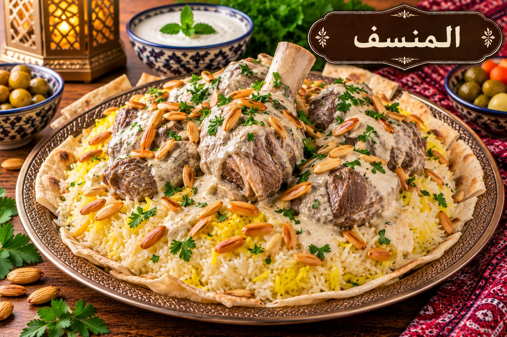

اقرأ الوصفة كاملة ورتّب المكونات لتكون خطوات الطبخ أوضح.
من مطبخك تبدأ الحكايةكل يوم طبخة.
كل يوم طبخة.
وكل طبخة لمّة.
اختَر طبختك بثقة. وصفات واضحة بمقادير دقيقة وخطوات مرتبة، مع أدوات تساعدك تخطّط لأسبوعك وتجهّز مشترياتك بسهولة.
وصفات متجددة لأفكار كل يومخيارات متنوعة لكل الأذواقخطوة بخطوة معك بالمطبخ

اختيار اليوم
منسف أردني أصيل
مقادير دقيقة وخطوات واضحة لنتيجة تليق بلمّة العائلة.
على ذوقك
اكتشف طبختك الجاية
تفاصيل تفرق
طبخ أسهل، كل يوم
غيّر عدد الأشخاص داخل الوصفة، وراجع حجم القدر ووقت النضج عند زيادة الكمية.
احفظ الوصفة بلا إنترنت من داخلها لتفتحها لاحقاً على نفس الجهاز.